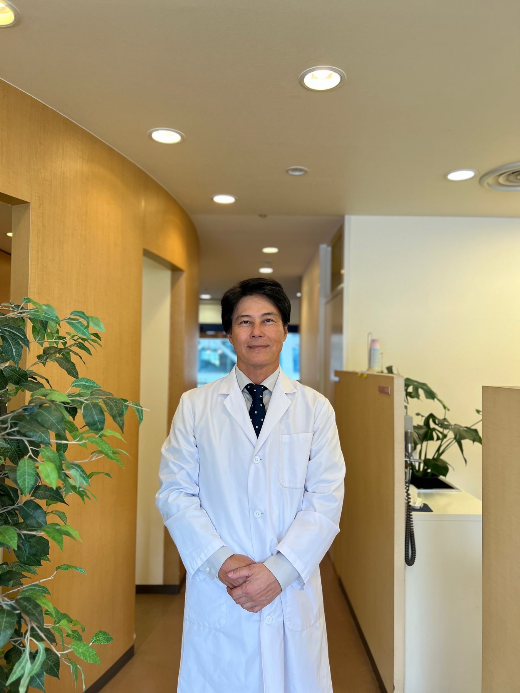
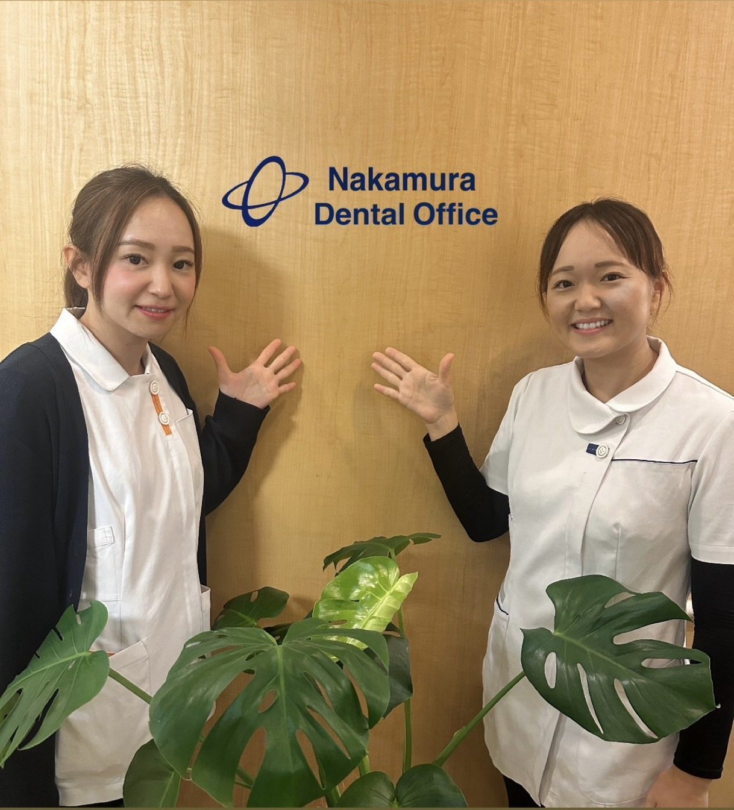

信頼と実績を

当院では２０年以上にわたり、院長 副院長のドクター2名体制で多くの患者様に来院していただいております。私たちはこの経験と技術の向上により、出来る限り歯の保存に努め、患者さまのさまざまなお口の悩みに対応しています。
保険診療内で満足して頂くよう常日頃より努力しておりますが、カバーしきれない治療、審美歯科(ホワイトニング ガムピーリング セラミックetc）.インプラント.特殊義歯.矯正なども多数実績がございます。
最新の技術と専門的な知識を活かし、患者さまのご要望を大切にした提案をいたします。美しい笑顔と健康なお口を守るお手伝いができれば幸いです。
お口の健康を守り、痛みを軽減する治療をご提供いたします。
詳しくはこちら›お子様に優しい治療で、歯の健康をしっかりとサポートいたします。
詳しくはこちら›最新の虫歯治療法で、痛みを最小限に抑える治療を行っております。
詳しくはこちら›早期発見・予防を重視し、健康な歯を長く守るための定期検診を実施しています。
詳しくはこちら›美しい歯並びと、噛み合わせの改善をサポートいたします。
詳しくはこちら›自然な見た目で、失った歯をしっかりと再生するインプラント治療を提供しています。
詳しくはこちら›ぴったりと合う快適な入れ歯をご提供し、自然な笑顔を取り戻していただけます。
詳しくはこちら›美しい笑顔と自信を取り戻すため、審美治療を丁寧に行っております。
詳しくはこちら›
当院のスタッフは、患者さま一人ひとりに寄り添い、丁寧でやさしい診療を心がけています。お口の健康を守るだけでなく、患者さまが安心して治療を受けられるよう、笑顔でサポートいたします。どんなお悩みでもお気軽にご相談ください。
詳しくはこちら›予約制 新患 急患随時
| 月 | 火 | 水 | 木 | 金 | 土 | 日 | |
|---|---|---|---|---|---|---|---|
| 9:30 - 13:00 | ● | ● | ● | ● | ● | ● | − |
| 15:00 - 19:00 | ● | ● | ● | ● | ● | ▲ | − |
▲ 土曜午後 15:00〜17:00
※ 休診日：日曜日・祝日
大阪市住之江区南港北１丁目１４－１６ 大阪府咲洲庁舎 ３Ｆ
地下鉄中央線コスモスクエア駅 徒歩8分／ニュートラム トレードセンター前駅 徒歩5分
TEL 06-6615-6180
アクセス詳細を見る›RESERVATION & CONTACT
診療時間 9:30〜13:00 ／ 15:00〜19:00 ※土曜午後は15:00〜17:00・日曜・祝日休診